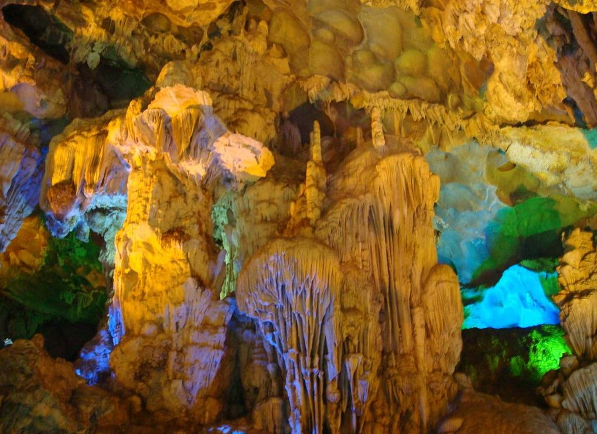

ĐỘNG THIÊN LONG
Động Thiên Long thuộc địa bàn xã Phù Long, huyện Cát Hải, là một điểm du lịch đang thu hút khách với nhiều điều huyền bí. Ngoài cảnh đẹp tựa chốn bồng lai, nơi đây còn là nơi lưu giữ dấu tích của người xưa.
Có nhiều cách để du khách đến động Thiên Long và bắt đầu hành trình khám phá động cũng như tham gia “tua” du lịch sinh thái đến khu vực này với những khu đầm, bãi sú, vẹt, rừng ngập mặn. Từ thành phố Hải Phòng, du khách đi tàu cao tốc hoặc đường bộ đến bến tàu, bến phà Cái Viềng, đặt chân lên đất Phù Long.

Bên trong động Thiên Long
Bên trong động Thiên Long